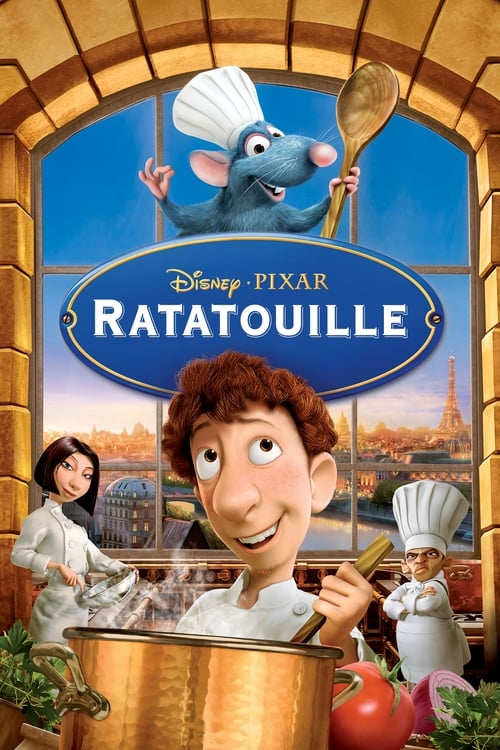

Tentang
Pixar Animation Studios atau Pixar adalah sebuah studio animasi komputer Amerika Serikat yang berpusat di Emeryville,California.
Pixar dimulai pada tahun 1979 sebagai Grapichs Grup, bagian dari divisi komputer Lucas film. Kemudian menjadi sebuah perusahaan pada tahun 1986 yang dibiayai oleh Apple Inc. bersama salah seorang pendiri Steve Jobs, yang menjadi pemegang saham mayoritas.
Sejak didirikan, Pixar telah merilis banyak animasi, diantaranya Toy Story pada tahun 1995, Cars pada tahun 2006, Ratatouille pada tahun 2007, dan Inside Out pada tahun 2015.
Sumber: wikipedia
Kali ini saya akan membahas 3 animasi pixar yang menjadi animasi favorit saya, YaituCars-2006

Cars adalah film komedi animasi komputer Amerika tahun 2006 yang diproduksi oleh Pixar Animation Studios dan dirilis oleh Walt Disney Pictures. Film ini disutradarai oleh John Lasseter dari skenario oleh Dan Fogelman, Lasseter, Joe Ranft, Kiel Murray, Phil Lorin, dan Jorgen Kluebin dan Steve Purcell.
Cars menceritakan pertemanan mobil balap bernama Lighting McQueen dengan berbagai mobil balap lainnya dikota. Pengisi suara Cars diantaranya adalah Owen Wilson, Bonnie Hunt, Paul Newman, Cheech Marin, Tony Shalhoub, dan Guido Quaroni. Film ini berdurasi 117 menit yang menghabiskan biaya produksi sebesar 120 Juta USD dan menghasilkan keuntungan sebesar 461,9 Juta USD.
Sinopsis
Sebuah mobil balap bernama Lighting McQueen pergi ke California untuk balap final di Piston Cup. Namun, McQueen tidak sengaja merusak jalanan kota, dan sebagai hukuman dia diwajibkan meperbaikinya. Ketika memperbaiki, McQueen bertemu truk derek tua bernama Mater, sebuah Porsche bernama Sally, dan sebuah Hudson Hornet bernama Doc Hudson. Setelah berteman dengan mereka, McQueen akhirnya sadar bahwa ada hal yang lebih penting dari tropi, kemasyhuran, dan sponsor.
Ratatouille-2007
Ratatouille adalah film animasi komputer Amerika 2007 bergenre komedi yang diproduksi oleh Pixar Animation Studios dan dirilis oleh Walt Disney Pictures. Film ini menghabiskan biaya produksi sebesar 150 Juta USD dan meraup keuntungan sebesar 623,7 Juta USD. Ratatouille disutradarai oleh Brad Bird yang mengambil alih proyek dari Jan Pinkava pada tahun 2005.
Sinopsis
Remy adalah tikus muda yang sangat idealis dengan indera rasa dan bau yang bermimpi menjadi koki seperti idolanya, Almarhum Auguste Gusteau, namun koloni tikusnya hanya tertarik pada makanan biasa. Suatu hari ketika koloni terpaksa meninggalkan rumah mereka, Remy dipisahkan dari klan dan akhirnya menemukan dirinya di atas dapur Gusteau Restaurant di Paris. Ketika itu Remy mengamati seorang tukang sampah muda Alfredo Linguini berusaha memperbaiki sup yang telah ditumpahkan, Linguini mengaku bahwa dia telah merusaknya dan memperbaiki kesalahannya. Linguini menangkap Remy akan tetapi ia tidak memberitahukannnya kepada Skinner.
Ketika Linguini berhadapan dengan Skinner pemilik baru restaurant, dia sengaja menyajikan sup yang telah ditumpahkan dan terbukti sukses. Colette Tatou yang merupakan satu-satunya koki wanita, meyakinkan Skinner untuk mempertahankan Linguini. Skinner melihat Remy dan memerintahkan untuk membunuhnya, akhirnya Remy dan Linguini menyusun rencana. Remy berada di dalam topi Linguini dan menggerakkan rambutnya seperti boneka ketika Linguini sedang memasak.
Diakhir cerita, Remy tertangkap oleh Skinner, namun dibebaskan oleh ayah dan saudaranya. Linguini meminta maaf kepada Remy karena tidak bisa memasak tanpa dia, dan mengungkapkan kebenaran kepada stafnya yang percaya dia gila, dan kemudian ia pun mengundurkan diri.
Inside Out-2015

Inside Out juga merupakan salah satu film animasi komputer Amerika pada tahun 2015 yang diproduksi Pixar Animation Studios dan dirilis oleh Walt Disney Pictures. Film ini disutradarai oleh Pete Docter dan Ronnie Del Carmen, dengan biaya produksi yang menghabiskan anggaran sebesar 175 Juta USD, dan keuntungan sebesar 858,8 Juta USD.
Sinopsis
Inside Out mengisahkan tentang seorang gadis yang bernama Riley, akan tetapi cerita tidak berpusat pada Riley namun pada pikirannya yang diwujudkan berupa karakter emosi. Emosi tersebut digambarkan dalam 5 sosok, yaitu Joy, Sadness, Anger, Disgust, dan Fear.
Cerita ini bermula ketika Riley yang periang harus mengalami guncangan saat keluarganya pindah ke San Fransisco, akan tetapi kehidupan barunya tak seindah kehidupan lamanya. Hal ini membuat kondisi Riley menjadi terguncang, yang membuat para emosi yang ada didalam Riley terlibat konflik hingga menjadi panik dan kebingungan, terlebih lagi ketika Joy dan Sadness tiba tiba tersedot ke memori jangka panjang dan harus segera kembali ke HeadQuarter.